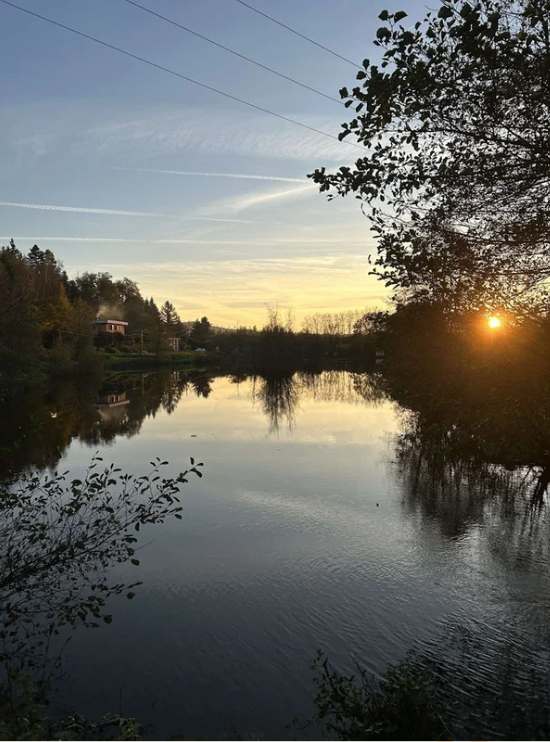
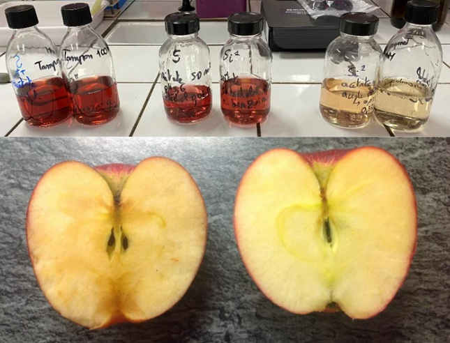
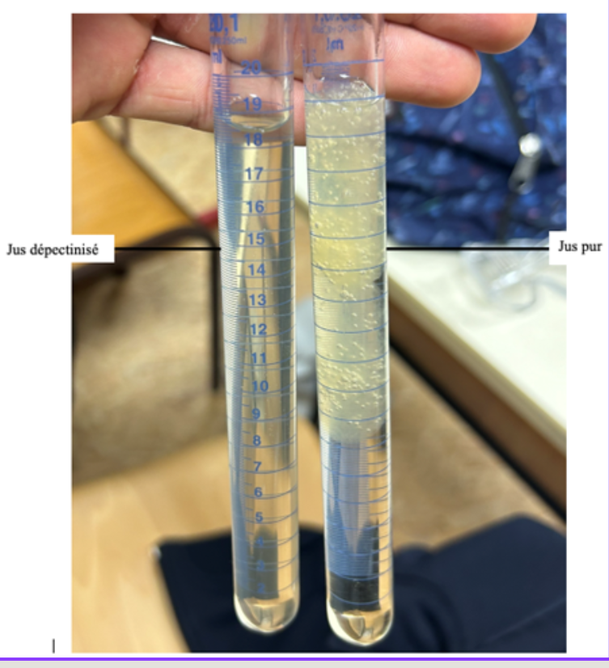
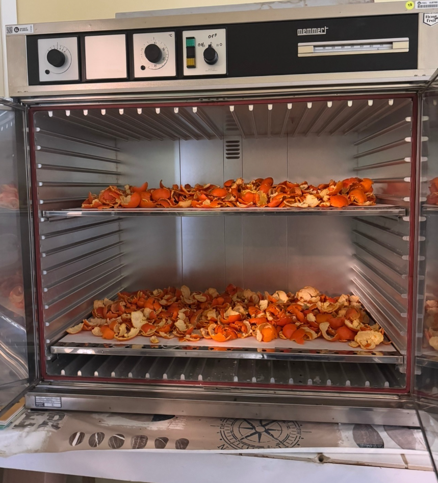
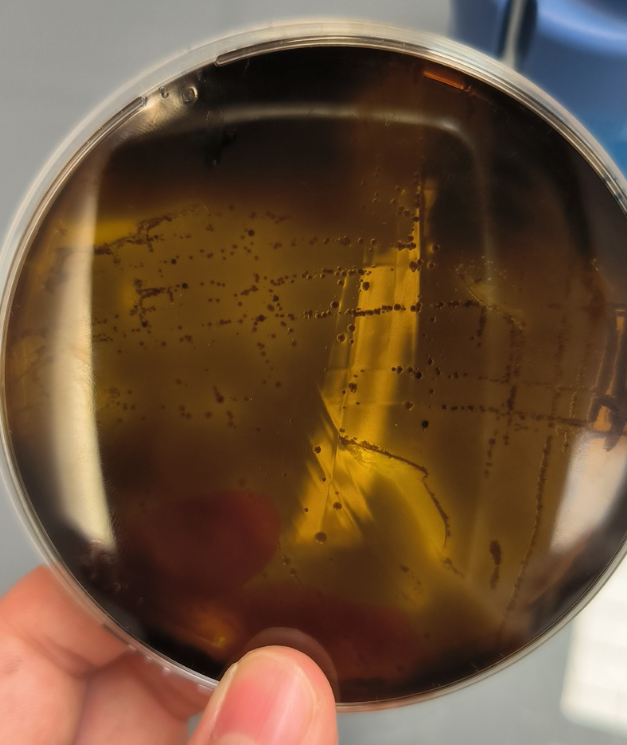
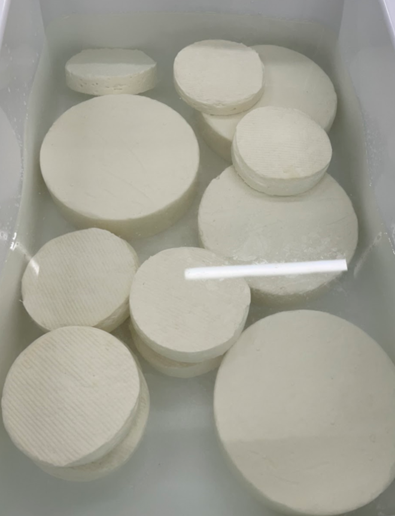

Semestres 3 et 4 · 2024–2025 · IUT Nancy-Brabois
En 2ème année, les SAé gagnent en autonomie et en complexité. Une nouvelle compétence entre en jeu : Innover.
Analyser une eau d'un lac en forêt des Vosges et la comparer à un lac en pleine ville, à travers un panel complet de méthodes physico-chimiques.
Mesure de la DCO, dosage des nitrites et nitrates, dosage des pesticides, dureté totale, caractère acido-basique.
Analyser une eau de lac forestier plutôt qu'un robinet, c'est choisir un objet d'étude qui a du sens. Sur l'eau du lac vosgien, on a mesuré la DCO, dosé les nitrates, les nitrites et les pesticides, évalué la dureté et le pH, puis comparé ces résultats à ceux d'un lac en milieu urbain. Ce qui était frappant, c'est à quel point les valeurs diffèrent selon l'environnement, et pas toujours dans le sens attendu. Chaque paramètre racontait quelque chose de concret sur l'histoire de l'eau.

Deux projets : brunissement enzymatique des pommes (polyphénol oxydase) + démarche microbiologique pour analyser des jus de pommes selon les critères FCD.
Étude cinétique de la polyphénol oxydase (PPO), dénombrements (levures, flores lactiques, E.coli), recherches de Salmonella et Listeria monocytogenes.
La partie cinétique de la PPO m'a demandé de mesurer l'absorbance à intervalles réguliers et d'en extraire une vitesse de réaction, un exercice de rigueur dans la manipulation autant que dans le traitement des données. La partie microbiologique sur les jus de pommes était d'un autre ordre : dénombrer des levures, chercher des Salmonella ou des Listeria selon les critères FCD, c'est travailler sur des seuils qui ont une réalité réglementaire. Deux protocoles très différents, deux façons de questionner un produit, et au final une vision plus complète de ce que "analyser" veut vraiment dire.

Production d'un jus de pomme pasteurisé sur un petit pilote de type industriel, du pressage à la mise en bouteille.
Dépectinisation, bilans de matière, mesure de l'acidité du jus de pomme, dosage des tannins par Lowenthal.
Travailler sur un pilote de type industriel, c'est une autre dimension par rapport aux TP classiques. Le jus de pomme, on le suit de A à Z : dépectinisation, bilans de matière, acidité, tannins. Ce qui m'a le plus marqué, c'est que chaque étape conditionne la suivante : une mauvaise dépectinisation et toute la clarification s'en ressent. C'est là que j'ai vraiment compris ce que ça veut dire de "piloter" un procédé plutôt que de simplement "faire" une manip.

Créer un shampoing solide à base de lait d'avoine avec des déchets de fruits (peaux de clémentines) comme colorant naturel.
Fabrication du lait d'avoine (floconneuse, enzyme alpha-amylase), séchage des peaux de clémentines, formulation shampoing avec SCI (Sodium Cocoyl Isethionate).
Le point de départ, c'est un agriculteur local qui produit de l'avoine et cherche à la valoriser autrement. À partir de là, on a construit un concept de A à Z : transformer cette avoine en lait, l'intégrer dans un shampoing solide, et utiliser des déchets de fruits locaux et de saison comme agent colorant. La fabrication du lait d'avoine avec enzyme alpha-amylase était déjà technique, mais c'est la formulation avec le SCI qui a été la plus exigeante : trouver la bonne proportion pour obtenir un produit solide, stable et utilisable. Ce projet m'a appris ce que ça implique de partir d'une contrainte de terrain et d'en faire un produit fini.

Continuité de la SAé 3.1 : analyse des microorganismes contenus dans l'eau du lac des Vosges selon les critères de potabilité (FCD).
TP microbiologie autour des critères de potabilité : dénombrements, recherches de germes pathogènes, comparaison eau de lac forêt vs lac urbain.
Reprendre les mêmes échantillons qu'en SAé 3.1, mais sous l'angle microbiologique, ça donne une vraie profondeur à l'analyse. Là où on regardait des paramètres physico-chimiques, on traquait maintenant des germes pathogènes et on les comparait à des seuils de potabilité. Ce double regard sur la même eau m'a convaincu qu'une analyse sérieuse ne peut pas se limiter à un seul type d'approche : physique, chimique et microbiologique sont complémentaires, pas substituables.

Production de fromages (pâte pressée non cuite + pâte molle), standardisation et écrémage du lait, valorisation de la crème en beurre.
Calcul extrait sec, force de présure, indice de lipolyse, taux de mouillage et d'écrémage. Analyses physico-chimiques des fromages produits.
Faire du fromage, c'est gérer une succession de paramètres interdépendants sous contrainte de temps. La standardisation du lait, le calcul de la force de présure, le taux d'écrémage : chaque valeur doit être juste avant de passer à l'étape suivante, sinon le produit final en souffre. Ce qui m'a le plus frappé, c'est la diversité des compétences mobilisées en même temps : calculs, manipulations, suivi analytique, et une attention constante à la matière. Valoriser la crème en beurre en fin de process m'a aussi montré qu'en fromagerie, presque rien n'est perdu si on sait quoi en faire.
